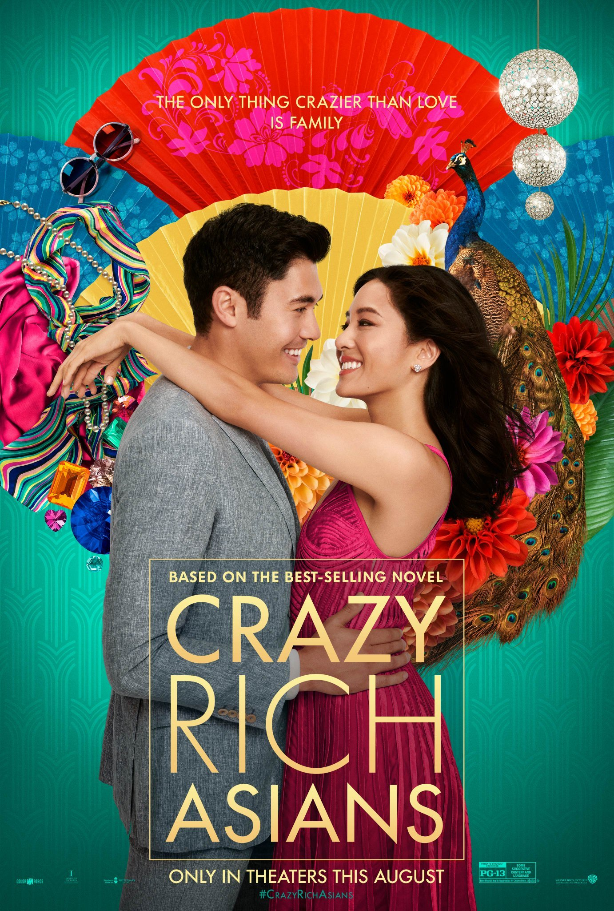

This series follows the tragic tale of three orphans -- Violet, Klaus, and Sunny Baudelaire -- who are investigating their parents'
mysterious death. The siblings are saddled with an evil guardian named Count Olaf (portrayed by Emmy-winning actor
Neil Patrick Harris), who will do whatever it takes to get his hands on the Baudelaires' inheritance. Violet, Klaus, and Sunny
must outsmart Olaf at every turn, foiling devious plans and disguises. The series is based on the best-selling series of books
by Lemony Snicket (aka Daniel Handler). Lemony Snicket lets children feel like they're in on a secret. That allows A Series of
Unfortunate Events to do what so much good horror fiction does — explore and validate our deepest fears. It also gives readers
the tools to deal with that horrifying reality. Netflix’s adaptation succeeded by staying true to the characters, concepts and tone,
bringing the tragic story of the Baudelaire children to life with visual whimsy and genuinely heartfelt performances. It’s worth
watching all the way to the final episode, which is appropriately called “The End.”
THE TRAILER
Money Heist (La Casa De Papel)
RATING: 10/10
Watching Money Heist probably could be a “fun” way to find out and learn basic Spanish, such as how to say “hello” and “thank you”,
asking for help, etc. For the bonus, you would get the “lesson” about how to satirize, swear, and make fun of in Spanish.
The show takes a stealthy look at the Spanish way of life.Watching Money Heist probably could be a “fun” way to find out and
learn basic Spanish, such as how to say “hello” and “thank you”, asking for help, etc. For the bonus, you would get the “lesson”
about how to satirize, swear, and make fun of in Spanish. The show takes a stealthy look at the Spanish way of life. This show is
addictive and the kind of fast-paced, adrenaline-fueled entertainment that can numb half your brain while you watch it and that'll
keep you hooked devouring episode after episode (something that in times of coronavirus lockdowns and pandemics is a good thing).
THE TRAILER
MOVIES
The Avengers: End Game
RATING: 10/10
After the devastating events of Avengers: Infinity War (2018), the universe is in ruins. With the help of remaining allies,
the Avengers assemble once more in order to reverse Thanos' actions and restore balance to the universe. “Avengers: Endgame”
is the culmination of a decade of blockbuster filmmaking, the result of years of work from thousands of people. It is designed
to be the most blockbuster of all the blockbusters, a movie with a dozen subplots colliding, and familiar faces from over 20 other
movies. It’s really like nothing that Hollywood has produced before, existing not just to acknowledge or exploit the fans of this
series, but to reward their love, patience, and undying adoration. The blunt thing you probably want to know most: It’s hard to
see serious MCU fans walking away from this disappointed. It checks all the boxes, even ticking off a few ones that fans won’t
expect to be on the list. It’s a satisfying end to a chapter of blockbuster history that will be hard to top for pure spectacle.
In terms of sheer entertainment value, it’s on the higher end of the MCU, a film that elevates its most iconic heroes to the
legendary status they deserve and provides a few legitimate thrills along the way.
THE TRAILER
Crazy Rich Asians

RATING: 10/10
Crazy Rich Asians is a book-based romcom that centers on Rachel Chu. This movie will make you fall in love with romantic comedies again.
It's not so much that Crazy Rich Asians' storyline is original as it is well done; it rarely goes for the cliché.
Romcoms have a tendency to portray their heroines as somewhat bumbling, not quite having their act together.
It is an Asian-Americans, and really any “hyphenated” American, will appreciate and empathize with the feeling of being ostracized
in both your home in America and your homeland. This movie does a good job of letting you feel the disconnect of not belonging
and the search to find your home. All this to say — I wasn’t ready for the emotional movement that came from Crazy Rich Asians,
and that made the experience all the better.